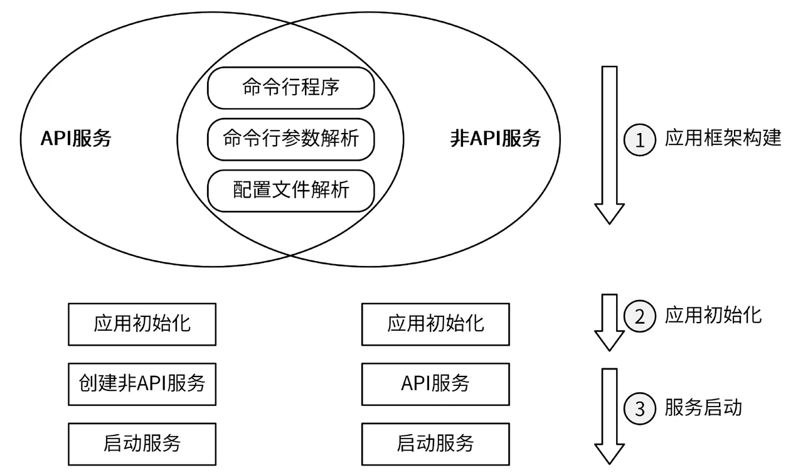
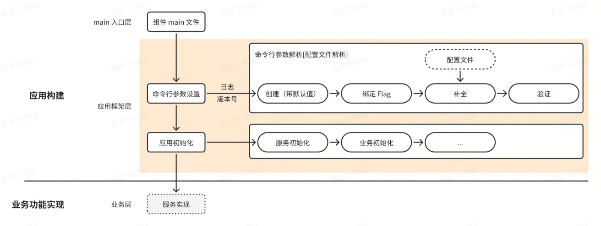

17 | 剖析 Kubernetes应用构建模型
应用三大基本功能
通常来说，一个 Go 应用可由以下功能点来构成：

- API 服务和非 API 服务都需要命令行程序、命令行参数解析、配置文件解析。也可以认为，这 3 类功能是大部分应用都需要的；
- 应用初始化、服务启动具有很强的业务属性，具体实现因业务不同而不同，但应用通常都需要进行这些处理；
Kubernetes 项目下的应用也符合上述应用的特点，所以我在介绍 Kubernetes 应用模型时，会重点关注命令行程序、命令行参数解析、配置文件解析 这 3 大类基本功能的具体实现方式，以及应用初始化、服务启动整体流程（但不会关注业务细节）。至于每个应用功能的具体实现，不是在这篇文章的讨论范围。
Kubernetes 应用构建模型
从 Kubernetes v1.10.0（2018.5.26 发布）发布至今，已经超过 5 年，其应用构建方式几乎没有变过。我们可以理解为，当前的 Kubernetes 应用构建模型已经成熟。
因为 kubernetes 有很多组件，这里通过归纳、总结这些应用的构建方法，并抽象成一个模型，进行统一介绍，以此来提高你的学习效率，降低你的学习难度。Kubernetes 的应用构建模型如下图所示：

在 Kubernetes 应用构建模型中，根据代码功能来分，分为以下 2 大块：
- 应用构建：用来构建 Kubernetes 组件，并启动服务。主要包括：命令行参数设置、应用初始化等功能。
- 业务功能实现：Kubernetes 组件功能的具体业务代码实现。
上述 2 大块会通过目录级的物理隔离，来提高程序的健壮性和可维护性：
- 应用构建：代码实现位于 cmd/kube-xxx/ 目录下；
- 业务功能实现：代码实现位于 c 目录下。
你可以将应用构建理解为控制面，将业务功能实现理解为数据流。绝大部分情况下，应用构建出现 Bug，会影响程序的启动，但并不会影响业务逻辑。而且应用功能构建出现问题，大部分情况下在启动服务组件的时候，能感知到错误。通过将应用构建时的代码变更进行物理隔离、影响降级，可以极大的提高服务的稳定性和可维护性。
我们构建应用时，主要关注点是应用构建这块儿的功能。应用构建又细分为以下 2 层：
- main 入口层：为了提高代码的可维护性和可阅读性，main 入口层代码比较简单，实现方式固定如下（位于文件 cmd/kube-xxx/xxx.go 中）：
import (
// ...
"k8s.io/kubernetes/cmd/kube-xxx/app"
)
func main() {
command := app.NewXXXCommand()
code := cli.Run(command)
os.Exit(code)
}
可以看到，应用构建的具体代码实现位于 k8s.io/kubernetes/cmd/kube-xxx/app 包。
-
应用框架层：该层的代码实现位于 cmd/kube-xxx/app 目录下。该目录下的代码实现又包括以下 2 类：
-
命令行参数设置：kubernetes 各组件功能强大，相应的命令行参数也比较多，并且这些命令行参数通常需要进行创建、绑定、验证等处理。为了便于维护代码，将命令行参数相关的代码统一存放在 cmd/kube-xxx/app/options 目录下。因为命令行参数很多，为了缩减每个代码文件的代码行数，又按命令行参数的功能设置类别，按文件进行保存：
- cmd/kube-xxx/app/options/options.go：命令行参数关联结构体实例创建、初始化、命令行参数标志绑定。
- cmd/kube-xxx/app/options/completion.go：命令行参数值补全；
- cmd/kube-xxx/app/options/validation.go：命令行参数值校验。
-
应用初始化：该类功能主要包括服务的初始化和业务初始化
- 服务初始化：主要涉及到应用框架的初始化和命令行参数的设置，例如：
// NewAPIServerCommand creates a *cobra.Command object with default parameters func NewAPIServerCommand() *cobra.Command { s := options.NewServerRunOptions() cmd := &cobra.Command{ Use: "kube-apiserver", Long: `The Kubernetes API server ...`, // stop printing usage when the command errors SilenceUsage: true, PersistentPreRunE: func(*cobra.Command, []string) error { // silence client-go warnings. // kube-apiserver loopback clients should not log self-issued warnings. rest.SetDefaultWarningHandler(rest.NoWarnings{}) return nil }, RunE: func(cmd *cobra.Command, args []string) error { verflag.PrintAndExitIfRequested() fs := cmd.Flags() // Activate logging as soon as possible, after that // show flags with the final logging configuration. if err := logsapi.ValidateAndApply(s.Logs, utilfeature.DefaultFeatureGate); err != nil { return err } cliflag.PrintFlags(fs) // set default options completedOptions, err := s.Complete() if err != nil { return err } // validate options if errs := completedOptions.Validate(); len(errs) != 0 { return utilerrors.NewAggregate(errs) } // add feature enablement metrics utilfeature.DefaultMutableFeatureGate.AddMetrics() return Run(completedOptions, genericapiserver.SetupSignalHandler()) }, Args: func(cmd *cobra.Command, args []string) error { for _, arg := range args { if len(arg) > 0 { return fmt.Errorf("%q does not take any arguments, got %q", cmd.CommandPath(), args) } } return nil }, } fs := cmd.Flags() namedFlagSets := s.Flags() verflag.AddFlags(namedFlagSets.FlagSet("global")) globalflag.AddGlobalFlags(namedFlagSets.FlagSet("global"), cmd.Name(), logs.SkipLoggingConfigurationFlags()) options.AddCustomGlobalFlags(namedFlagSets.FlagSet("generic")) for _, f := range namedFlagSets.FlagSets { fs.AddFlagSet(f) } cols, _, _ := term.TerminalSize(cmd.OutOrStdout()) cliflag.SetUsageAndHelpFunc(cmd, namedFlagSets, cols) return cmd }- 业务初始化：跟业务相关的代码初始化，例如：数据库创建、API 路由初始化、认证授权功能初始化、服务实例的创建和启动等，例如：
// Run runs the specified APIServer. This should never exit. func Run(opts options.CompletedOptions, stopCh <-chan struct{}) error { // To help debugging, immediately log version klog.Infof("Version: %+v", version.Get()) klog.InfoS("Golang settings", "GOGC", os.Getenv("GOGC"), "GOMAXPROCS", os.Getenv("GOMAXPROCS"), "GOTRACEBACK", os.Getenv("GOTRACEBACK")) config, err := NewConfig(opts) if err != nil { return err } completed, err := config.Complete() if err != nil { return err } server, err := CreateServerChain(completed) if err != nil { return err } prepared, err := server.PrepareRun() if err != nil { return err } return prepared.Run(stopCh) }
-
kube-apiserver 的应用初始化模块，会先执行服务初始化，然后再服务初始化中调用 func Run(opts options.CompletedOptions, stopCh <-chan struct{}) error 函数进行业务初始化。可以看到 kube-apisearver 在应用初始化时，又进行了更进一步的函数级隔离：隔离服务初始化相关代码和业务初始化相关代码。也就是说，在 Kubernetes 应用构建模型中，会从目录级、文件级、函数级 3 个级别来隔离相对独立的功能，以此提高代码的可维护性和可阅读性。
通过对，Kubernetes 应用构建模型的分析，我们可以发现命令行参数设置和服务初始化部分其实模式是固定的。这就具备了进一步抽象成为一个应用框架的可能性。
基于 Kubernetes 应用构建模型的应用框架
在阅读 Kubernetes 源码的过程中，我还有以下 2 个体会：
- Kubernetes 的每个组件，都用相似的构建方式和代码来编写，代码复用度可以进一步提升，这也算是 Kubernetes 应用构建实现中的一个小瑕疵；
- Kubernetes 应用构建方式非常规范、统一，以至于你可以根据其构建方式，抽象出一个普适的应用构建模型。